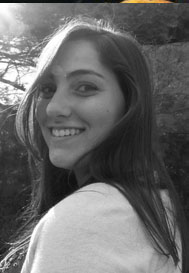
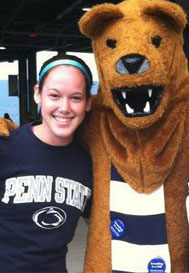

Meet the Committee
Sponsorship
The Sponsorship Directors are mainly responsible for contacting and encouraging potential university, local, and corporate sponsors. Throughout the year we develop an expenditure list of food and other supplies needed for Fresh START to run smoothly, and work with companies to obtain these necessities. We also collect raffle prizes that are given away during Fresh START. We develop innovative ways to promote and retain sponsorship and ensure that businesses are aware of the impact of their donations. In addition, we work closely with the Fresh START adviser to organize all transactions from the donors. Finally, we collaborate with other members on the planning committee to coordinate the pick-up and delivery of supplies on the day of Fresh START.

Danielle Long
|
Hello there! My name is Danielle Long, and I serve as one of the Directors of Sponsorship for Fresh START 2013! I am a junior studying Elementary Education and Teaching English as a Second Language. I have been involved in Fresh START since my freshman year, as a volunteer. From there, I was able to serve as a Team Leader and Team Liaison. Fresh START has been a wonderful experience for me because it allowed me to make connections on how I wanted to get involved at Penn State. It has given me an amazing opportunity to have such a positive impact on the Penn State community. I am also the Penn State Clown Nose Club President, a BiSci 003 Teaching Assistant, and heavily involved in THON. I hope you have the opportunity to get involved in Fresh START and in Penn State's community in general. Get rooted in service! Feel free to e-mail me with any questions or concerns at dlong159@gmail.com!
|

Jacqui Lyman
|
My name is Jacqui Lyman and I am one of the Co-Directors for Sponsorship for Fresh START 2013. As a freshmen I participated as a volunteer and became a team leader the next year. Last year I served as the Director of Service Sites and will continue on the planning committee again this year in hopes of making Fresh START 2013 the best yet! I am a junior majoring in Kinesiology in the Honors College with the hopes of doing Pediatric Physical Therapy or Cardic Rehabilitation in the future. I am from just outside Boston, Massachusetts. Outside of Fresh START I am one of the co-chairs for Exercise is Medicine Week next year and work in the Sports Medicine Lab on campus. If you have any questions, feel free to contact me at jml5633@psu.edu.
|
|